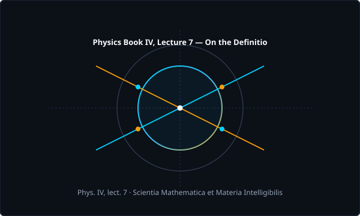

Physics Book VI, Lecture 1 — That No Continuum (Line, Time, or Motion) Can Be Composed of Indivisible Points¶
In VI Physicorum, Lectio 1 — Quod nullum continuum (linea, tempus vel motus) ex punctis indivisibilibus componi potest

[lib. 6 l. 1 n. 1] After the Philosopher has made determinations concerning the division of motion into its species, and concerning the unity and contrariety of motions and rests, in this sixth book he intends to determine the things that pertain to the division of motion according as it is divided into quantitative parts. And it is divided into two parts. In the first, he shows that motion, like every continuum, is divisible; in the second, he shows in what manner motion is divided, at Now it is necessary that the now itself, etc. The first part is again divided into two: in the first, he shows that no continuum is composed of indivisibles; in the second, he shows that no continuum is indivisible, at It is manifest from what has been said, therefore, etc. And this first part is again divided into two: in the first, he shows that no continuum is composed of indivisibles; in the second part (because the proofs premised seem to pertain rather to magnitude), he shows that the same account holds concerning magnitude, motion, and time, at Now it belongs to the same account, etc. Concerning the first he does two things: first, he resumes certain definitions laid down above, which he now employs to demonstrate what is proposed; second, he proves what is proposed, at For neither are their extremes one, etc.
[lib. 6 l. 1 n. 2] He says first, therefore, that if the definitions previously laid down of the continuous, of the contiguous (that which is in contact), and of the consecutive are fitting—namely that continuous things are those whose extremes are one; contiguous things (things in contact) are those whose extremes are together; and consecutive things are those between which there is nothing intermediate of their own genus—from these it follows that it is impossible for any continuum to be composed of indivisibles, such as a line out of points, provided that a line is called something continuous and a point something indivisible. And he adds this lest anyone should use the name of line and of point otherwise.
[lib. 6 l. 1 n. 3] Then when he says, For neither are their extremes one, etc., he proves what is proposed. And first, he introduces two main arguments to prove what is proposed; second, he makes plain certain points that could be doubtful in his proofs, at Nor can any other genus, etc. Concerning the first main argument he does two things: first, he shows that no continuum is composed of indivisibles either by way of continuity or by way of contact; second, that neither is it composed by way of consecutive things, at Yet neither can a point be consecutive, etc. Concerning the first he sets forth two arguments, of which the first is as follows. Out of whatever things something one is composed, whether by way of continuity or by way of contact, it is necessary that they possess extremes that are one or that are together. Yet the extremes of points cannot be one: because an extreme is spoken of with respect to some part, whereas in an indivisible one cannot take something that is an extreme and something else that is some other part. Similarly, it cannot be said that the extremes of points are together: because nothing can be the extreme of a partless reality, since an extreme and that of which it is the extreme are always distinct, whereas in a partless reality one cannot take one thing and another. It remains, therefore, that a line cannot be composed of points either by way of continuity or by way of contact.
[lib. 6 l. 1 n. 4] The second argument he sets forth at Moreover, it would be necessary, etc., which is as follows. If any continuum is constituted out of points, it is necessary either that they be continuous with one another, or that they touch one another: and the same account holds concerning all other indivisibles, namely that no continuum is composed out of them. Now to prove that indivisibles cannot be continuous with one another, let the first argument suffice. Yet to prove that they cannot touch one another, another argument is introduced, which is as follows. Everything that touches another touches either whole to whole, or part of the one to part of the other, or part of the one to the whole of the other. Yet since an indivisible has no part, it cannot be said that a part of the one touches a part of the other, or a part the whole; and thus it is necessary, if two points touch one another, that whole touch whole. Yet out of two things of which the whole of one touches the whole of the other, no continuum can be composed: because every continuum has distinct parts, such that this is one part and this another, and is divided into parts diverse and distinct in place, that is, in position, among things that possess position; whereas things that touch one another according to the whole are not distinguished in place or position. It remains, therefore, that a line cannot be composed out of points by way of contact.
[lib. 6 l. 1 n. 5] Then when he says, Yet neither, etc., he proves that a continuum is not composed of indivisibles by way of the consecutive. For a point will not be consecutive to another point in such a way that a length, that is, a line, could be constituted out of them; nor will one now be consecutive to another now in such a way that time could be composed out of them: because one thing is consecutive to another when there is nothing intermediate of the same genus between them, as was expounded above. Yet between any two points there is always an intermediate line: and thus if a line is composed of points, as you grant, it follows that between any two points there is always another intermediate point. And similarly between any two nows there is an intermediate time. Neither, therefore, is a line composed of points, nor time of nows, as of things standing consecutively to one another.
[lib. 6 l. 1 n. 6] The second principal argument he sets forth at Moreover, they would be divided, etc., which is taken from the other definition of the continuum laid down above at the beginning of Book III—namely, that a continuum is that which is divisible into infinity: and the argument is as follows. Out of whatever things either a line or time is composed, into those same things it is divided: if, therefore, each of these is composed of indivisibles, it follows that it is divided into indivisibles. Yet this is false, since none of the continua is divisible into partless things; for if it were so, it would not be divisible into infinity. No continuum, therefore, is composed of indivisibles.
[lib. 6 l. 1 n. 7] Then when he says, Nor can any other, etc., he makes plain two things that he had stated above. The first of these was that between two points there is an intermediate line, and between two nows, time. And he makes this plain as follows. If there are two points, they must differ according to position: otherwise they would not be two, but one. Yet they cannot be contiguous with one another, as was shown above: hence it remains that they stand apart, and that there is something intermediate between them. Now nothing else can be intermediate between them save a line between points, and time between nows. And he proves this as follows: because if between points there were some medium other than a line, it is manifest that that medium would be either indivisible or divisible. If it were indivisible, it must be distinct in position from both extremes; and since it does not touch them, there must again be some other medium between the indivisible posited as intermediate and the extremes, and so on into infinity, unless a divisible medium be posited. If, on the other hand, the medium between the two points is divisible, it will be divisible either into indivisibles or into things always further divisible. Yet it cannot be said that it is divided into indivisibles, because then the very same difficulty will return—namely how something divisible could be composed out of indivisibles. It remains, therefore, that that medium is divisible into things always further divisible. Yet this is the very definition of a continuum: therefore that medium will be a certain continuum. Now no continuum other than a line can be intermediate between two points: therefore between any two points there is an intermediate line. And by the same reasoning, between any two nows there is time; and similarly in other continua.
[lib. 6 l. 1 n. 8] Then when he says, Now it is manifest, etc., he makes plain the second point that he had supposed, namely that every continuum is divisible into divisibles. For if it were granted that a continuum were divisible into indivisibles, it would follow that two indivisibles would be contiguous with one another so as to be able to constitute a continuum. For it is necessary that continuous things have a single extreme, as appears from the definition of the continuous, and that the parts of a continuum touch one another: because if their extremes are one, it follows that they are together, as was stated in Book V. Since, therefore, it is impossible for two indivisibles to be contiguous with one another, it is impossible that a continuum be divided into indivisibles.